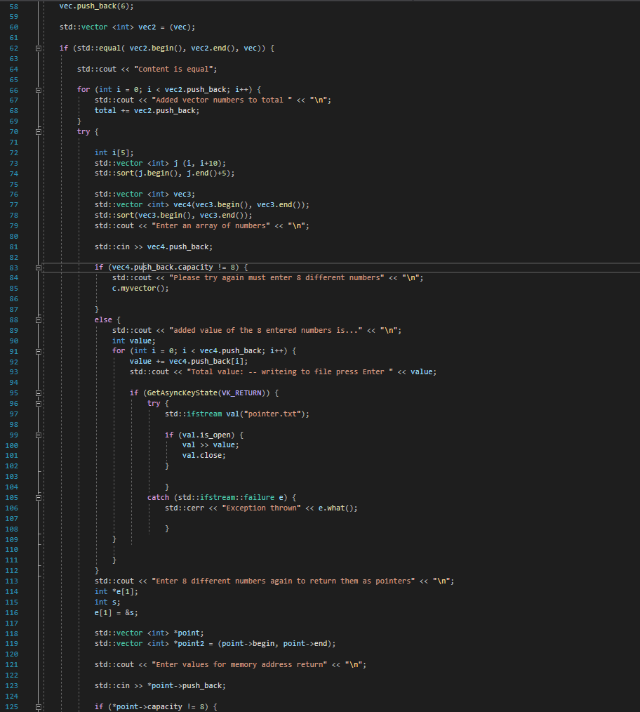

Memory address threading
C++ project that takes input and return memory addresses

void cApp::myvector() {
cApp c;
//c.vectorNum = { 1, 2, 3, 4 };
//int* arr[] = { &c.vectorNum };
//std::cout << "Pointer to values in vector " << c.vectorNum2().push_back;
int total;
std::vector vec = { 1, 2, 3 };
vec.push_back(4);
vec.push_back(5);
vec.push_back(6);
std::vector vec2 = (vec);
if (std::equal( vec2.begin(), vec2.end(), vec)) {
std::cout << "Content is equal";
for (int i = 0; i < vec2.push_back; i++) {
std::cout << "Added vector numbers to total " << "\n";
total += vec2.push_back;
}
try {
int i[5];
std::vector j (i, i+10);
std::sort(j.begin(), j.end()+5);
std::vector vec3;
std::vector vec4(vec3.begin(), vec3.end());
std::sort(vec3.begin(), vec3.end());
std::cout << "Enter an array of numbers" << "\n";
std::cin >> vec4.push_back;
if (vec4.push_back.capacity != 8) {
std::cout << "Please try again must enter 8 different numbers" << "\n";
c.myvector();
}
else {
std::cout << "added value of the 8 entered numbers is..." << "\n";
int value;
for (int i = 0; i < vec4.push_back; i++) {
value += vec4.push_back[i];
std::cout << "Total value: -- writeing to file press Enter " << value;
if (GetAsyncKeyState(VK_RETURN)) {
try {
std::ifstream val("pointer.txt");
if (val.is_open) {
val >> value;
val.close;
}
}
catch (std::ifstream::failure e) {
std::cerr << "Exception thrown" << e.what();
}
}
}
}
std::cout << "Enter 8 different numbers again to return them as pointers" << "\n";
int *e[1];
int s;
e[1] = ;
std::vector *point;
std::vector *point2 = (point->begin, point->end);
std::cout << "Enter values for memory address return" << "\n";
std::cin >> *point->push_back;
if (*point->capacity != 8) {
std::cout << "Enter 8 different numbers to reveal memory address" << "\n";
c.myvector();
}
else {
std::cout << "Displayed address for 8 different integers" << "\n";
int pointvalue;
for (int i = 0; &i < point->push_back; i++) {
pointvalue = &point->push_back[&i];
std::sort(*point->begin, *point->end);
std::cout << "Memory " << &pointvalue[&i] << std::endl;
}
}
}
catch(std::exception &e) {
std::cout << "Something went wrong" <<
e.what();
}
std::cout << "Creating list..." << "\n";
Sleep(3000);
std::cout << "List is created" << "\n";
c.mylist();
std::cout << "Enter numbers for the list" << "\n";
std::cin >> c.mylist().push_back;
switch (c.mylist().push_back) {
case 1:
if (c.mylist().begin(), c.mylist().end(), +0 <= 0)
std::cout << "Invalid operation list cannot hold 0 values";
break;
case 2:
if (c.mylist().push_back.size == 8) {
std::list list_two;
list_two.push_back = c.mylist().push_back;
std::cout << "List is made" << list_two.push_back << "\n";
}
break;
default:
std::cout << "Invalid" << "\n";
}
}